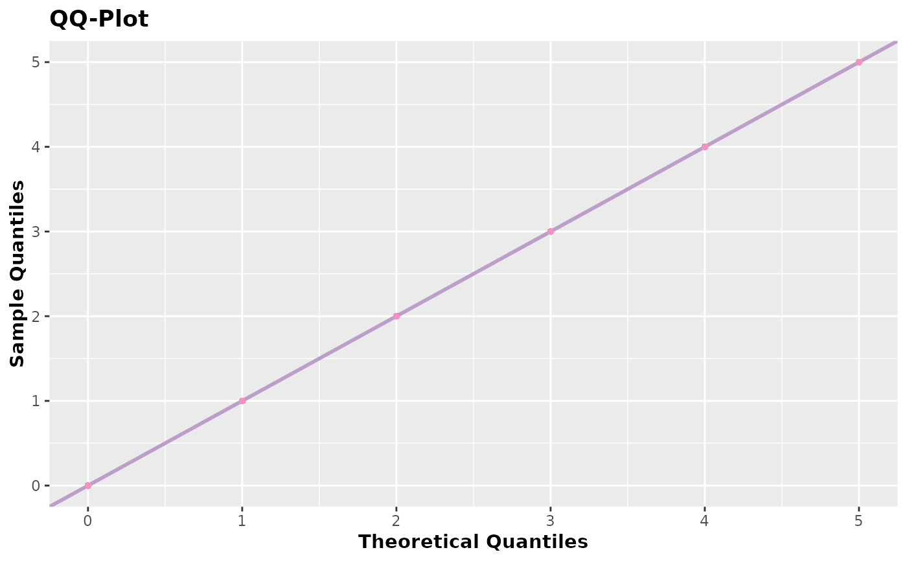
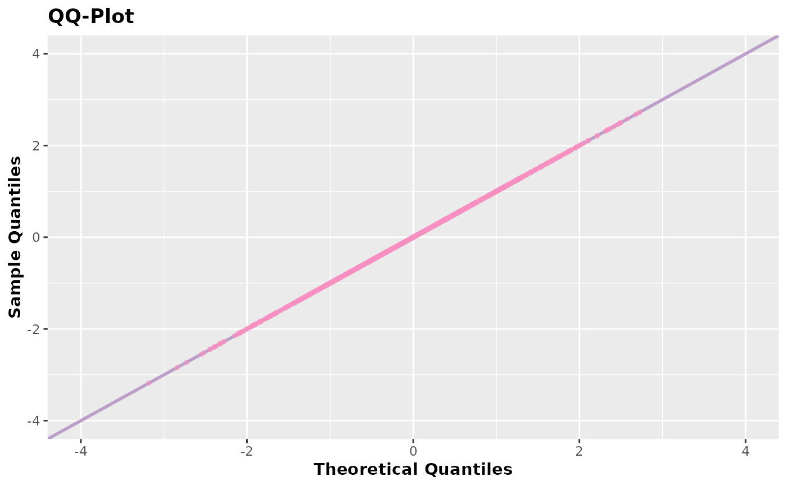

QQ-Plot Plot the QQ-Plot between observed quantiles and theoretical quantiles.
Source:R/qqplot.R
qqplot.accept_reject.RdQQ-Plot Plot the QQ-Plot between observed quantiles and theoretical quantiles.
Usage
# S3 method for accept_reject
qqplot(
x,
alpha = 0.5,
color_points = "#F890C2",
color_line = "#BB9FC9",
size_points = 1,
size_line = 1,
parallel = FALSE,
cores = NULL,
...
)Arguments
- x
Object of the class accept_reject returned by the function
accept_reject().- alpha
Transparency of the points and reference line representing where the quantiles should be (theoretical quantiles).
- color_points
Color of the points (default is
"#F890C2").- color_line
Color of the reference line (detault is
"#BB9FC9").- size_points
Size of the points (default is
1).- size_line
Thickness of the reference line (default is
1).- parallel
If
TRUE, all cores will be used for internal calculations of theoretical quantiles. The default isFALSE. Use TRUE if you find the plot is taking too long.- cores
Number of cores to be used if
parallel = TRUE. Defalut isNULL, which means all cores will be used.- ...
Additional arguments.
Value
An object of classes gg and ggplot with the QQ-Plot between the
observed quantiles generated by the return of the function accept_reject()
and the theoretical quantiles of the true distribution.
Details
Just like in the accept_reject() function, the qqplot.accept_reject()
function uses parallelism using FORK, meaning it works on Unix-based
operating systems (Linux and MacOS). What is parallelized are the internal
calculations of theoretical quantiles of the true distribution. This
parallelism will only be useful for excessively large samples. Additionally,
for samples larger than ten thousand, the geom_scattermost() function from
the scattermore library
is used to plot the points, as it is more efficient than geom_point() from
the ggplot2 library.
Examples
set.seed(0) # setting a seed for reproducibility
x <- accept_reject(
n = 2000L,
f = dbinom,
continuous = FALSE,
args_f = list(size = 5, prob = 0.5),
xlim = c(0, 5)
)
#> ! Warning: f(5) is 0.03125. If f is defined for x >= f(5), trying a upper limit might be better.
qqplot(x)

y <- accept_reject(
n = 1000L,
f = dnorm,
continuous = TRUE,
args_f = list(mean = 0, sd = 1),
xlim = c(-4, 4)
)
qqplot(y)
